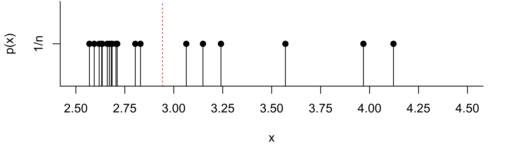

Given a random sample \(X_1,\dots,X_n\) drawn from some population distribution \(F\), we will consider how to learn from the values in the sample about the mean of the distribution \(F\). That is, if \(X_1,\dots,X_n\) is a random sample, then all of these random variables have the same expected value, say \(\mu\), which is the expected value of the distribution from which each value was drawn, that is the expected value of the population distribution. We will suppose that the value \(\mu\) is unknown to us, and that we wish to learn about the value of \(\mu\) by computing the average of the values in the random sample, i.e. the sample mean.
We first give the definition of the sample mean.
Definition 16.1 (Sample mean) Given a random sample \(X_1,\dots,X_n\), the sample mean is defined as \[
\bar X_n = \frac{1}{n}(X_1 + \dots + X_n)
\]
One interpretation of the sample mean is that it is the balancing point of the random sample. That is, if weights were placed on a number line at the positions of the values in the random sample, the sample mean \(\bar X_n\) gives the position at which a fulcrum would need to be placed in order to balance the number line. One can also imagine a probability mass function (PMF) which places probability \(1/n\) on each of the \(n\) data points, like the one depicted in Figure 16.1 for the pinewood derby finishing times from Example 15.1. Then the sample mean is the expected value according to this PMF. Again, it can be viewed as the balancing point of the values.
Code
ft <-c(2.5692,2.5936,2.6190,2.6320,2.6345,2.6602,2.6708,2.6804,2.6850,2.7049,2.7111,2.8034,2.8300,3.0639,3.1489,3.2411,3.5701,3.9686,4.1220)ft_avg <-mean(ft)n <-length(ft)par(mar=c(4.1,4.1,.1,2.1))plot(ft,rep(1/n,n),type='h',yaxt='n',ylab='p(x)',xlab='x',xaxt='n',xlim=c(2.5,4.5),bty="l")points(ft,rep(1/n,n),pch=19)axis(2,at=1/n,labels="1/n")axis(1,at=seq(1.5,4.5,by=0.25))abline(v = ft_avg,col="red",lty=3)abline(h =0)

Figure 16.1: PMF giving probability mass \(1/n\) to each value in the sample of pinewood derby finishing times. The position of the sample mean \(\bar X_n\) is indicated by the vertical dotted line.
The sample mean \(\bar X_n\) will function as our best guess of the population mean, by which we refer to the mean of the population distribution, the distribution from which the random sample was drawn. We will denote the population mean by \(\mu\), noting that, since all of the random variables \(X_1,\dots,X_n\) have the same distribution, we have \(\mathbb{E}X_i = \mu\) for all \(i=1,\dots,n\).
So, we will use the value of \(\bar X_n\) to learn about the value of \(\mu\), which is unknown to us. In order to learn anything from the value of \(\bar X_n\), we must acknowledge that \(\bar X_n\) is itself a random variable; that is, it can take more than one possible value, and, while the range of possible values it can take is known, we cannot know in advance which value it will take. So if we were, for example, to attend another pinewood derby rally featuring cars decorated by similarly-aged girls and record the finishing times, we would observe a value of \(\bar X_n\) distinct from the value computed on the data at hand. Indeed, if we were to attend a thousand such pinewood derby car rallies, we likely never observe the same average finishing time twice; we would instead have 1000 distinct values of \(\bar X_n\). How then, one may wonder, can we possibly learn about the population mean \(\mu\) when the value of \(\bar X_n\) is different for every random sample we observe?
To answer this question, we run a thought experiment. We imagine attending, say, 1000 pinewood derby rallies and computing from each one a sample mean. Then we imagine that we make a histogram of these 1000 sample means, which would show us an estimate of the probability density function (PDF) of \(\bar X_n\). We refer to this imaginary distribution of \(\bar X_n\) over repeated random sampling as the sampling distribution of \(\bar X_n\). Now we ask ourselves: What will this distribution look like? Firstly, around what value is this distribution centered? Secondly, how spread out are the values in this distribution? Thirdly, we might also ask what the shape of this distribution would be.
In answer to the first and second inquiries—where the distribution of \(\bar X_n\) is centered and how spread out it is—we have the following result:
Proposition 16.1 (Mean and variance of the sample mean) Let \(X_1,\dots,X_n\) be a random sample from a distribution with mean \(\mu\) and variance \(\sigma^2\). Then we have \(\mathbb{E}\bar X_n = \mu\) and \(\operatorname{Var}\bar X_n = \sigma^2/n\).
The result tells us that the sampling distribution of \(\bar X_n\) is centered at the population mean \(\mu\) and that its spread is governed by the variance \(\sigma^2\) of the population distribution as well as the size of the sample. We see that a larger sample size \(n\) leads to a smaller variance in \(\bar X_n\). Recalling that the variance is the expected squared distance from the mean, we can interpret the result as saying that we can expect the sample mean of a large sample to be closer to the population mean \(\mu\) than that of a small sample. In short, more data gives more accuracy.
Table 16.1 gives the mean and the variance of the sample mean \(\bar X_n\) under a few different population distributions.
Table 16.1: Expected value and variance of the sample mean for different population distributions.
\(X_1,\dots,X_n \overset{\text{ind}}{\sim}\)
\(\mathbb{E}\bar X_n\)
\(\operatorname{Var}\bar X_n\)
\(\mathcal{N}(\mu,\sigma^2)\)
\(\mu\)
\(\sigma^2/n\)
\(\text{Bernoulli}(p)\)
\(p\)
\(p(1-p)/n\)
\(\text{Poisson}(\lambda)\)
\(\lambda\)
\(\lambda/n\)
\(\text{Exponential}(\lambda)\)
\(1/\lambda\)
\(1/(\lambda^2n)\)
In the sample mean \(\bar X_n\) we have encountered our first sample statistic or statistic for short:
Definition 16.2 (Sample statistic) A sample statistic or statistic is any quantity computed as a function of the values in a random sample \(X_1,\dots,X_n\).
So now we have (upper-case S) Statistics—the study of what can be learned from noisy sample data about the process which generated the data—and (lower-case s)statistics—quantities computed on the values in a random sample.
Continuing to focus on the sample mean, we next consider the shape of its distribution.
In the special situation when \(X_1,\dots,X_n\) is a random sample such that the population distribution is a normal distribution, we find that the sample mean \(\bar X_n\) will also have a normal distribution. In particular, we have the result:
Proposition 16.2 (Distribution of sample mean when the population is normal) If \(X_1,\dots,X_n \overset{\text{ind}}{\sim}\mathcal{N}(\mu,\sigma^2)\) then \(\bar X_n \sim \mathcal{N}(\mu,\sigma^2/n)\).
The above result agrees with the previous result, which states that if \(X_1,\dots,X_n \overset{\text{ind}}{\sim}\mathcal{N}(\mu,\sigma^2)\) we will have \(\mathbb{E}\bar X_n = \mu\) and \(\operatorname{Var}\bar X_n = \sigma^2/n\). But it says more: This result says that if we were to collect, say, 1000 random samples and compute \(\bar X_n\) on each of these random samples, the histogram of these 1000 realizations of \(\bar X_n\) would have the bell shape characteristic of the normal distribution, centered at mean \(\mu\) and with spread governed by the variance \(\sigma^2/n\).
In the case of a normal population distribution, the above result tells us that we can find probabilities concerning \(\bar X_n \sim \mathcal{N}(\mu,\sigma^2/n)\) as follows: We may find \(P(a \leq \bar X_n \leq b)\) by
Transforming \(a\) and \(b\) from the \(X\) world to the \(Z\) world (the number-of-standard-deviations world) by \(a \mapsto (a - \mu)/(\sigma/\sqrt{n})\) and \(b \mapsto (b - \mu)/(\sigma/\sqrt{n})\).
Using the \(Z\) table (Chapter 33) to look up \(\displaystyle P\Big( \frac{a-\mu}{\sigma/\sqrt{n}} \leq Z \leq \frac{b-\mu}{\sigma/\sqrt{n}} \Big)\), where \(Z \sim \mathcal{N}(0,1)\).
And if \(q\) represents the \(p\) quantile of \(\bar X_n\), we may find \(q\) as follows:
Obtain the \(p\) quantile of \(Z\sim \mathcal{N}(0,1)\) from the \(Z\) table (Chapter 33) and denote this by \(q_Z\).
Then back-transform \(q_Z\) to \(q\) with the formula \(\displaystyle q = \mu + \frac{\sigma}{\sqrt{n}} q_Z\).
Exercise 16.1 (Cell phone talk time) Let \(X\) be the number of minutes of cell-phone talk time in the last month of a randomly selected USC undergraduate. Suppose that the cell phone talk times of USC undergraduates are Normally distributed with mean \(\mu = 300\) and variance \(\sigma^2 = 50^2\).
Suppose you sampled \(4\) USC undergraduates and took the average of their cell phone talk times. Let the average of the four talk times be \(\bar X\). What is \(P(|\bar X_n - 300| > 50)\)?2
Sample \(9\) USC undergraduates and let \(\bar X\) be the mean of their cell phone talk times. What is \(P(|\bar X_n - 300| > 50)\)?3
First, let’s figure out what \(|X - 300| > 50\) means: it means that \(X\) is more than \(50\) away from the mean \(300\), so we want \(P(X < 250 \text{ or }X > 350)\). For the values \(250\) and \(350\) we compute \(Z\), the number of standard deviations from the mean: \[
Z = \frac{X - \mu}{\sigma} \quad \text{ gives }\quad \frac{250 - 300}{50} = - 1 \quad \text{ and } \quad \frac{350 - 300}{50} = 1.
\] We get from the \(Z\) table that \(P(Z < -1) = (Z > 1) = 0.1587\), so the answer is \(2(0.1587) = 0.3174\). ↩︎
Like before, we interpret this as \(P(\bar X_n < 250 \text{ or } \bar X_n > 350 )\). We again compute the number of standard deviations of \(250\) and \(350\) from the mean, but this time the standard deviation of our random variable is \(\sigma/\sqrt{n}\). The variance of \(\bar X_n\) is \(\sigma^2/n\), so our \(Z\) is going to be different: \[
Z = \frac{\bar X_n - \mu}{\sigma/\sqrt{n}} \quad \text{ gives }\quad \frac{250 - 300}{50/2} = -2 \quad \text{ and } \quad \frac{350 - 300}{50/2} = 2.
\] We get from the \(Z\) table that \(P(Z < -2) = P( Z > 2 ) = 0.0228\), so the answer is \(2(0.0228) = 0.0456\). ↩︎
With a sample size of \(n=9\), the standard deviation of the mean \(\bar X_n\) is smaller—its variability around the true mean decreases as the sample size grows. Now \[
Z = \frac{\bar X_n - \mu}{\sigma/\sqrt{n}} \quad \text{ gives }\quad \frac{250 - 300}{50/3} = -3 \quad \text{ and } \quad \frac{350 - 300}{50/3} = 3.
\] We get from the \(Z\) table that \(P(Z < -3) = P( Z > 3 ) = 0.0013\), so the answer is \(2(0.0013) = 0.0026\).↩︎